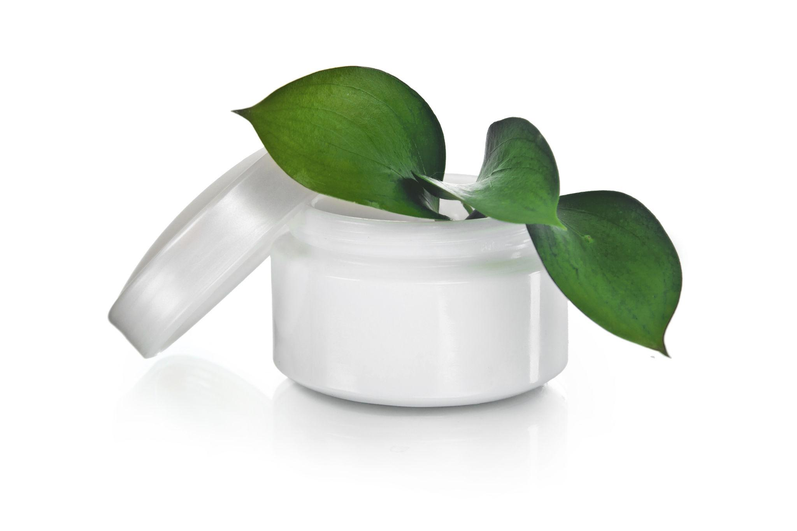
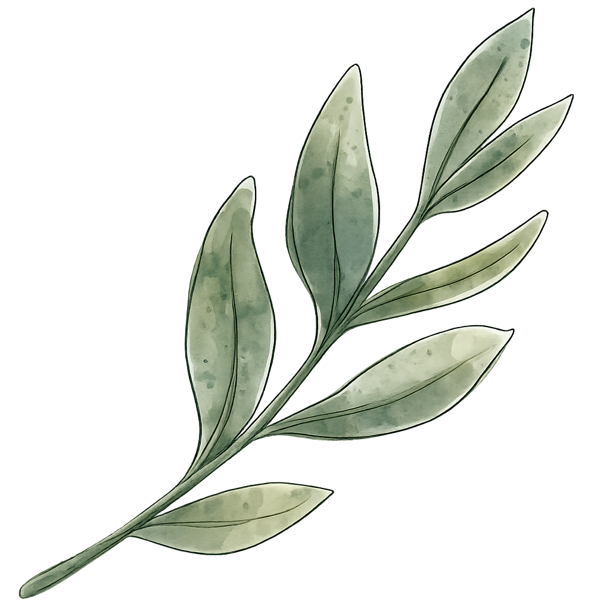
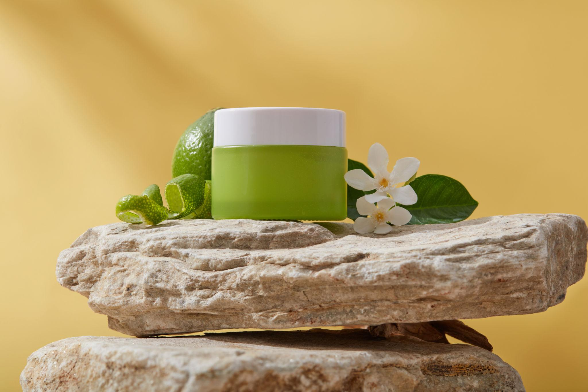
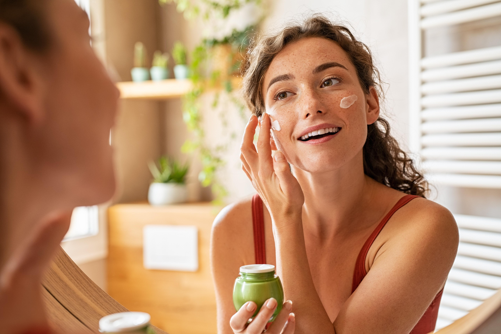
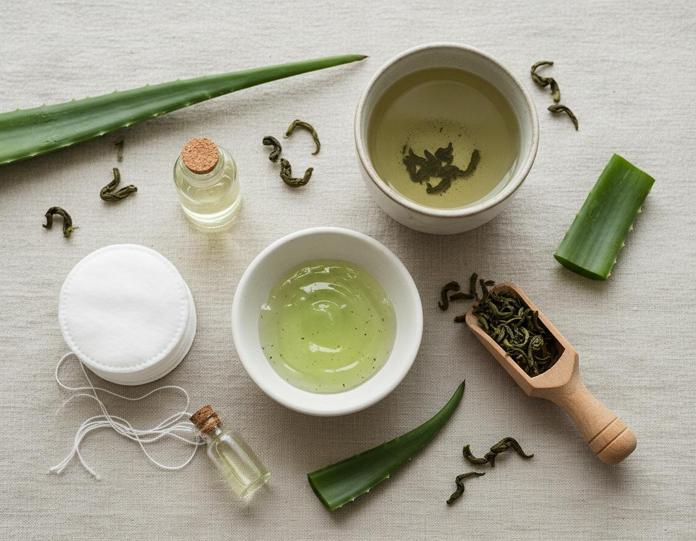
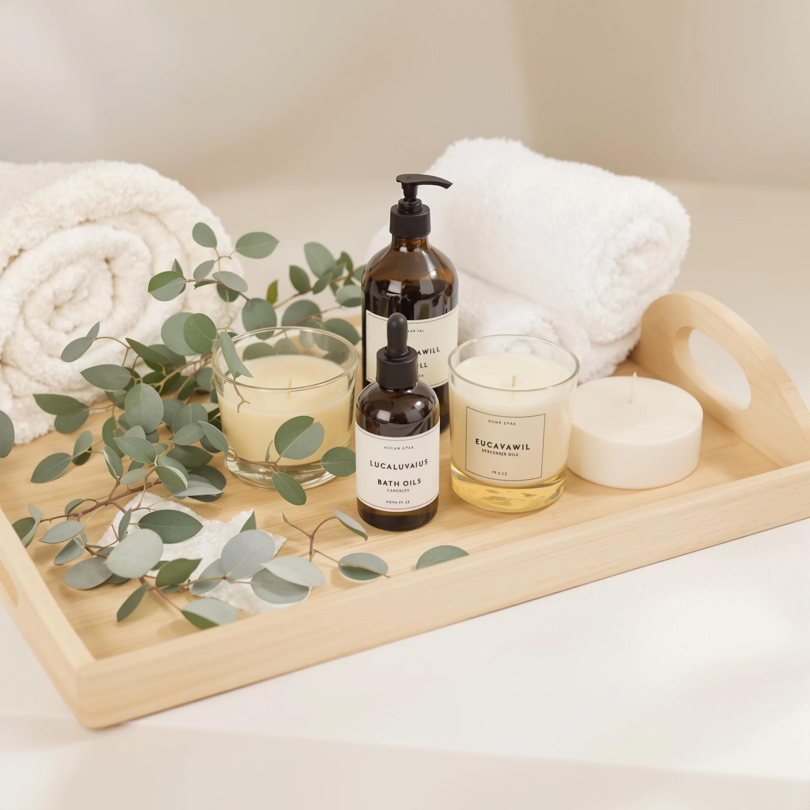
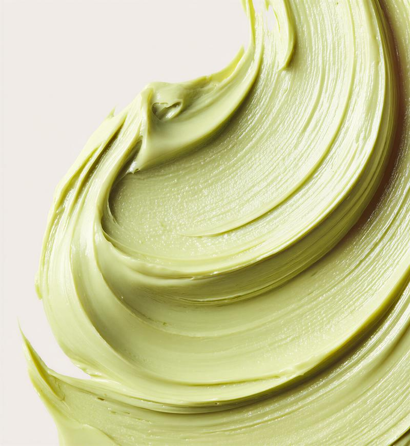

Pure Botanical Formula
Crafted with matcha leaf extract, vitamin E and natural oils for daily hydration.

LUNARA BOTANICHydrate, calm and restore your skin with antioxidant-rich green tea extract and plant-based ingredients.
Shop NowABOUT LUNARA
At Lunara Botanic, we believe skincare should feel calm, effective, and uncomplicated. Every formula is inspired by the purity of plants and crafted for modern everyday routines.
Our Matcha Leaf Renewal Cream combines antioxidant-rich green tea extract, aloe vera, jojoba oil, and vitamin E to deeply hydrate and soothe the skin while maintaining a lightweight, breathable finish.
Designed for people who value clean ingredients and timeless rituals, Lunara transforms daily skincare into a moment of balance, comfort, and self-care.
Explore the CollectionFEATURED PRODUCTS

Crafted with matcha leaf extract, vitamin E and natural oils for daily hydration.

Minimal ingredients, maximum skin comfort.

Lightweight texture that absorbs in seconds without leaving a greasy finish./p>

Matcha • Aloe Vera • Jojoba • Vitamin E

Transform your skincare routine into a calming self-care moment.

Melts into the skin and provides long-lasting hydration throughout the day.
Maintains moisture balance for up to 24 hours.
Helps defend the skin from environmental stress.
Free from parabens, sulfates and harsh chemicals.
"I've been using Lunara Botanic for a month now, and my skin has never felt better. The matcha cream is a game-changer!"
- Sarah L."I love the lightweight texture and how quickly it absorbs. My skin feels hydrated all day."
- Emily R."Finally, a skincare product that is both effective and clean. Highly recommend!"
- Jessica M.